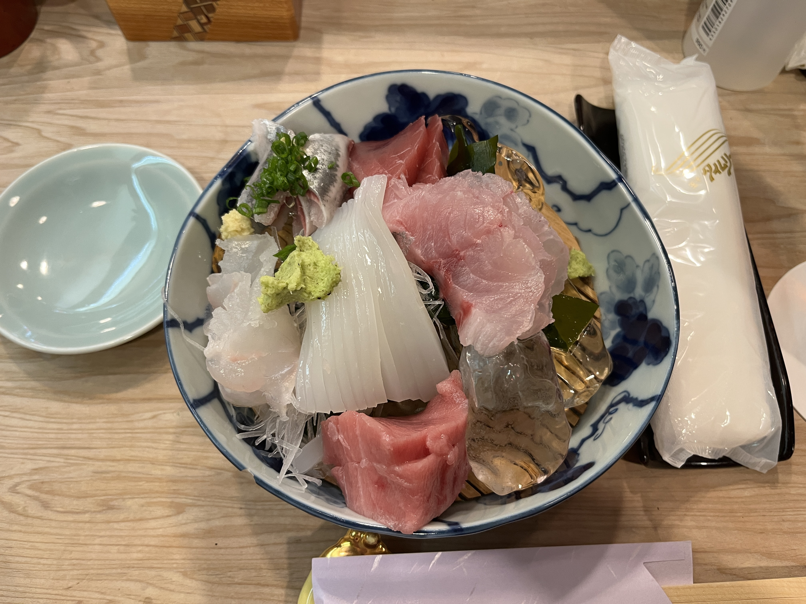

Top 4 Japan Foods

Tonkatsu Meal Set 5/5
Crispy Fried Pork with cabbage, rice, miso soup and crushed sesame seeds with Tonkatsu sauce. Everytime I go to Japan I make sure to go this place because they have to best tonkatsu. The meat is very soft and it doesn't feel very heavy. It is probably my favourite food in the whole world.
Crispy Fried Pork with cabbage, rice, miso soup and crushed sesame seeds with Tonkatsu sauce. Everytime I go to Japan I make sure to go this place because they have to best tonkatsu. The meat is very soft and it doesn't feel very heavy. It is probably my favourite food in the whole world.

Chirashi 4/5
Salmon and Tuna on rice with egg, miso soup and broth that you can pour into Chirashi. This was very refreshing as it had fresh fish but you could also pour the broth over the rice to make the meat sort of cooked and have flavour in the rice.
Salmon and Tuna on rice with egg, miso soup and broth that you can pour into Chirashi. This was very refreshing as it had fresh fish but you could also pour the broth over the rice to make the meat sort of cooked and have flavour in the rice.

Sashimi from Omakase 4/5
Tuna, Squid, Flatfish, Yellowtail, Mackerel served on ice. This fish was by far the freshest fish I've ever eaten. We ate at a Omakase which means it's the "chefs choice" so the chef would give you whatever they decided was best. That day it was just the 5 of us in the restaurant since it was very small and it was a very cool experience.
Tuna, Squid, Flatfish, Yellowtail, Mackerel served on ice. This fish was by far the freshest fish I've ever eaten. We ate at a Omakase which means it's the "chefs choice" so the chef would give you whatever they decided was best. That day it was just the 5 of us in the restaurant since it was very small and it was a very cool experience.

Takoyaki from Osaka 4/5
Cooked flour-based batter filled with minced octopus, tempura and green onion topped with mayonnaise, sauce and bonito flakes. I usually don't like the takoyaki I eat in Canada, there's something about it that seems off but when I went to Osaka in Japan, it was so good. I was blown away.
Cooked flour-based batter filled with minced octopus, tempura and green onion topped with mayonnaise, sauce and bonito flakes. I usually don't like the takoyaki I eat in Canada, there's something about it that seems off but when I went to Osaka in Japan, it was so good. I was blown away.